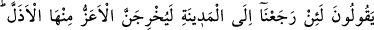
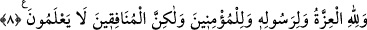

ilimlerden Allah’ın semavî rızıklarının hazineleri, kulların havâssı için saklanmış olup
Cenab-ı Hak onları dilediği yönden rızıklandırmaktadır. Yenilen içilenlerden, giyilen
giysilerden, ulaşım ve savaşlarda kullanılan ve katırlardan saklanmış yeryüzü hazineleri
de Allah’ındır ki, kullarının avamı için saklanmıştır. Hiç beklemedikleri yönden onları
rızıklandırmaktadır. Ancak münâfıklar kendi kabiliyetlerini bozdukları, hiç nurları
bulunmadığı ve karanlık yönlerinin üstün gelmesi dolayısıyla ilahî sırları, Rabbânî
irşadları ve uyarmaları anlayacak durumda değillerdir.
8. Onlar: Andolsun, eğer Medine’ye dönersek, üstün olan, zayıf olanı oradan
mutlaka çıkaracaktır, diyorlardı. Halbuki asıl üstünlük, ancak Allah’ın,
Peygamberinin ve müminlerindir. Fakat münâfıklar bunu bilmezler.
“Onlar: Andolsun, eğer Medine’ye dönersek, üstün olan, zayıf olanı oradan
mutlaka çıkaracaktır, diyorlardı.” Rivâyet edildiğine göre Rasûlullah (s.a.) Huzâa
kabilesinin bir kolu olan Mustalık oğulları ile Kadid denilen bölgede bir su olan
Müreysî denilen yerde savaş için karşılaştığında, onları büyük bir yenilgiye uğratmış,
onlardan bazıları öldürülmüş, ganîmet olarak iki bin deve, beş bin koyun elde edilmiş
ve ikiyüz veya daha fazla âile esir edilmişti. Mustalık oğullarının reisi Haris’in kızı
Cüveyriye de esirin arasında bulunuyordu. Peygamberimiz (s.a.) yirmi yaşında olan
Cüveyriye’yi âzâd etmiş ve onunla evlenmişti.
Bu suyun başındaki kalabalık dolayısiyle, Hz. Ömer’e (r.a.) ücretle hizmet eden Saîd
b. Gifarî’nin (r.a.) oğlu Cahcâh atını sulamak için getirmiş ve münâfıkların başkanı
Übey oğlu’nun yeminli işbirlikçisi olan Sinanü’l-Cühenî ile kavga etmişti. Cahcah (r.a.)
muhâcirlerden, münâfık Sinan da ensardan yardım istemişlerdi. Muhâcirlerin
yoksullarından olan Ciâl (r.a.) Cahcah’a yardım etmiş ve Sinan’ı tokatlamıştı. Münâfık
Sinan reisleri olan İbn Übeyy’e şikâyet edince, İbn Übeyy, Cahcah’a (r.a.) Sen de mi
buradasın? Biz Muhammed’e (s.a.) tokatlanmak için mi arkadaşlık ediyoruz? Yemin
olsun ki, bizim ve onların benzerleri, şu darb-ı mesel gibidir: “Besle köpeğini yesin
seni.” Ama yemin olsun ki, eğer bu yolculuktan Medine’ye dönersek, elbette üstün
olanlar, zelil ve alçak olanları oradan çıkaracaktır. Üstün olanla kendisini, zelil olanla
da müminleri kasdediyordu. Münâfıkların başının söylediği bu sözün bütün münâfıklara
isnad edilmesi bu sözü onaylamalarından dolayıdır.
Sonra münâfıkların başı kendi adamlarına karşı sözüne şöyle devam etti: “Siz
kendinize ne yaptınız? Kendi yurdunuza onları soktunuz ve mallarınızı onlarla
paylaştınız. İyi biliniz ki vallahi eğer siz Cial ve benzerlerine yiyeceklerinizin fazlasını
vermeseydiniz sizin boyunlarınıza böyle çıkmazlar ve sizin yanınızdan hemen